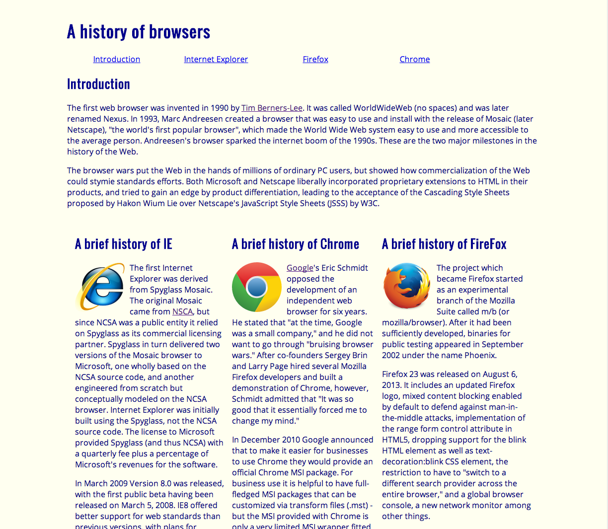

It is hard to make perfection
06 Oct 2022Thoughts on Bootstrap, CSS, and HTML…
I never knew about making webpages only using HTML and CSS. It felt very basic at first since it felt very slow and tiresome since CSS requires to keep calling those functions back to the HTML. Bootstrap fixes this by introducing classes without needing to write code for something so insignificant. This is important because it saves time and a lot of debugging and it will help with understanding simple documentation. In a way I am constantly learning how to make elaborate websites because of the time I invested and the obstacles that I face. I believe raw HTML and CSS cannot match elaborateness of Bootstrap.
 This is from the browser history with minimal bootstrap but mostly pure HTML and CSS code. It did not feel good and to be honest, it does not look good either. To be frank it was simpler to code but felt like a hassle to implement. I love the simplicity of the raw CSS and HTML code but it was too simple in fact and lead me to having issues.
 This is with Bootstrap with HTML and a little bit of CSS code. It looks far more elaborate than the picture above since we were using Bootstrap in this image and it feels a lot better to code. Even though, I do not the classes because there is a big document full of said classes. But it is manageable and can be done and not have much issue.
This is with Bootstrap with HTML and a little bit of CSS code. It looks far more elaborate than the picture above since we were using Bootstrap in this image and it feels a lot better to code. Even though, I do not the classes because there is a big document full of said classes. But it is manageable and can be done and not have much issue.
Closing the canvas…
I was loved creating art but never found myself as an artist but with CSS and HTML and Bootstrap it allowed to create a very basic webpage but serviceable enough to look elaborate. I believe in the future I could have the ability to copy the webpage by simply knowing what to do and expect. After all, this entire lessons feels like what class should be. It should be hands on with many errors but can easily corrected with enough practice rather than looking through the book and its references.